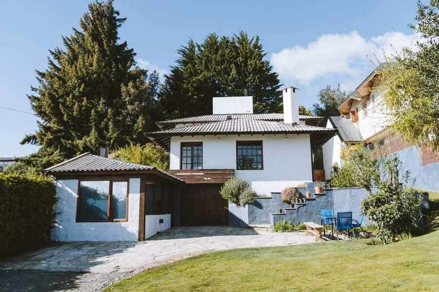
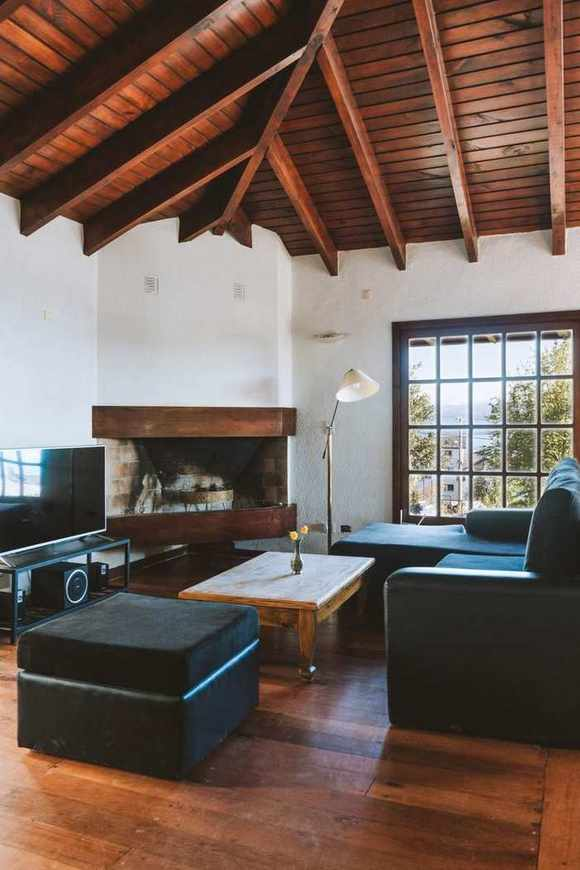

Una nueva unidad de negocio para Domux: administrar propiedades de terceros en renta corta y media, con una web propia de alojamientos, fotos y calendario de ocupación.
Hoy Domux trabaja sobre todo la venta. Muchas de esas propiedades —y muchas de clientes que no quieren vender— pueden generar ingresos todo el año si alguien local las administra bien.
Invierno de nieve y verano de lagos. Bariloche es uno de los destinos más buscados del país, y Dina Huapi crece como alternativa tranquila cerca del aeropuerto.
Personas que llegan por trabajo, estudio, temporada o mudanza buscan 1 a 6 meses amoblado. Es un segmento menos atendido que el turístico.
Muchos dueños viven fuera de la zona o no quieren ocuparse de huéspedes, limpieza ni cobros. Buscan alguien de confianza.
Administrar la renta mantiene al propietario cerca de Domux: cuando decida vender o comprar, ya es cliente.
La misma propiedad puede alternar: turístico en temporada alta y temporario en los meses tranquilos. Así sube la ocupación anual.
Administro alojamientos turísticos en el centro de Bariloche, con web propia, reservas por WhatsApp, publicidad online y calendario de disponibilidad.
[Completar con tus números: años operando, propiedades, reseñas, ocupación]


Marca, cartera de propietarios, captación, contratos y relación comercial.
Puesta a punto, publicación, tarifas, reservas, huéspedes, limpieza y mantenimiento.
Recibe su liquidación mensual con detalle de ocupación, ingresos y gastos.
Comisión sobre lo que efectivamente se cobra. Los números son una base para conversar.
| Concepto | Turístico | Temporario |
|---|---|---|
| Comisión de administración sobre lo cobrado | __ % a definir | __ % a definir |
| Limpieza y ropa blanca | La paga el huésped | Al salir |
| Reparto Domux / operación | __ % / __ % a definir | |
| Desarrollo de la web (Fase 1) | $ ______ a definir | |
| Mantenimiento web mensual | $ ______ a definir | |
Referencia: las administradoras de renta corta suelen cobrar entre un 15% y un 25% de lo facturado; conviene validarlo con la competencia local antes de cerrar.
Elegir 3 a 5 propiedades de la cartera de Domux en Bariloche y Dina Huapi.
Definir comisión, reparto y responsabilidades de cada parte.
Apuntar a tener la sección online antes de la próxima temporada alta.
[Tu nombre] · [WhatsApp] · [Email]